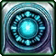
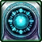
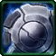
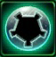
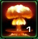

- Stats
- Abilities/Upgrades
- Strategy
- Lore
- Related
Armor: 0
 50/200 75/200 with  Moebius Reactor 0.5625 per second
50/200 75/200 with  Moebius Reactor 0.5625 per secondDamage: 10 (20 vs light)
Attacks: 1
Cooldown: 1.5
Targets: Ground and Air
Attack Range: 6
Acceleration: 1000
Collision Radius: 0.375
Requirements: Levels 2-3 requires Armory
| Level |  Level 1 Level 1 |  Level 2 Level 2 |  Level 3 Level 3 |
| Minerals |  100 100 | 175 | 250 |
| Vespene Gas |  100 100 | 175 | 250 |
| Time |  160 160 | 190 | 220 |
| Damage Bonus | +1 (+2) | +1 (+2) | +1 (+2) |
| Total Damage | 11 (22) | 12 (24) | 13 (26) |
200Vespene Cost:
100Supply:
 2
2Produced From: Barracks with Tech Lab Build Time:
40Requirements: Ghost Academy
Medivac Size: 2
Bunker Size: 2
Unit Type: Light, Biological, Psionic, Ground
Requirements: Levels 2-3 requires Armory
| Level |  Level 1 Level 1 |  Level 2 |  Level 3 Level 3 |
| Minerals | 100 | 175 | 250 |
| Vespene Gas | 100 | 175 | 250 |
| Time | 160 | 190 | 220 |
| Armor Bonus | +1 | +2 | +3 |
| Total Armor | 1 | 2 | 3 |
| Icon | Minerals | Vespene Gas | Research Time | Researched At |
| 0 | 0 | 0 | Already Researched |
Duration:
0.5Range: 10
Damage: 25 (50 vs psionic)
Information: The Sniper Round ability allows the Ghost to attack a single biological unit from a range of 10 to deal 25 (50 versus psionic) damage.
Sniper Round may be shift queued to set up multiple snipes.
Sniper Round used to do 50 damage to all targets, but was nerfed in patch 1.4.3 to only deal the full 50 damage against Psionic targets.
| Icon | Minerals | Vespene Gas | Research Time | Researched At |
| 0 | 0 | 0 | Already Researched |
Range: 10
Radius: 1.5
Damage: 100 to shields and energy
75Information: EMP Round allows the Ghost to shoot a projectile that does 100 damage to shields and energy, that has a radius of 1.5
EMP Round also temporarily reveals Cloaked units that it hits for 10 seconds. This does not reveal burrowed units though.
EMP Round was nerfed in patch 1.3.0 to only drain 100 energy instead of all. It was also nerfed in patch 1.4.2 to reduce the radius from 2 to 1.5.
| Icon | Minerals | Vespene Gas | Research Time | Researched At |
|  | 150 | 150 | 120 | Ghost Academy |
25 Inital, 0.9/s afterInformation: Once Personal Cloak has been researched the Ghost is allowed to cloak itself. Cloak costs 25 energy initally, and then 0.9/s after.
Once the ability is active, the ghost is considered cloaked, and can only be revealed by detectors or effects that reveal cloaking.
Cloaked units create a shimmering effect over enviorment to let opponents know where they are. The shimmer is difficult to see, but a skilled opponent can spot the shimmer effect to know where the cloaked unit is.
| Icon | Minerals | Vespene Gas | Research Time | Researched At |
| 100 | 100 | 80 | Ghost Academy |
Information: Moebius Reactor increases the starting energy of Ghosts from 50 to 75.
| Icon | Minerals | Vespene Gas | Research Time | Researched At |
|  | 100 | 100 | 60 | Ghost Academy (Factory) |
Range: 12
Radius: 8
Duration:
20Damage: 300 (500 vs structure) (100%/50%/25% based on radius)
Information: Tactical Nuke Strike allows the Ghost to paint a target and call down a Nuke that does 300 damage (500 vs structures) in a radius of 8. It takes 20 seconds from the start of using the ability for a Nuke to come down, and a warning sound is played to opponents.
The nuke is created at a Ghost Academy, and requires a Factory.
A Ghost Academy can only hold one nuke, but a Terran player may build multile Ghost Academies to hold more.
Tactical Nukes ignore armor on all units and structures. Tactical Nuke also ignores the Hardened Shield on the Immortal
The amount of damage a Nuke does is based on where the object being damaged is at in the radius. Thanks to the TeamLiquid Wiki for creating this graphic. Click here for the graphic on their site.
{kind=link}
If you have any suggestions for more strategies, go ahead and post on the forums 'here'!
+1 Weapons vs Zerglings
When Zealots have a +1 weapon advantage versus Zerglings, they will kill Zerglings in two attacks instead of three. This makes Zealots very effecient against Zerglings until the zerg catches up in armor upgrades.
Because of this, there are a handful of timing attack that take advantage of the effecient +1 weapon zealots, forcing the zerg to make spines, roaches, or some other unit than zerglings unless the zerg wants to trade inefficiently.
+1 Weapons vs Zerglings
Sum text about how gosu this is
+1 Weapons vs Zerglings
Sum text about how gosu this is
- Overview
- Skills/Experiments
General Information
 Ghosts were chosen from psychically-gifted individuals who were quarantined by the Terran Confederacy and trained from infancy to channel their psionic energies to augment their natural physical strength and endurance. Conscripts who successfully completed the Ghost Program's rigorous training and augmentations then served as commandos and assassins.
Ghosts were chosen from psychically-gifted individuals who were quarantined by the Terran Confederacy and trained from infancy to channel their psionic energies to augment their natural physical strength and endurance. Conscripts who successfully completed the Ghost Program's rigorous training and augmentations then served as commandos and assassins.
Ghosts are trained in target shooting, close-quarters combat (martial arts and possibly other techniques) and vehicular expertise.Ghosts are also trained to move quickly and are desensitized to combat; an example would be Sarah Kerrigan's training, who had a gun placed to her head by a guard and was ordered to kill the guard before he killed her. Kerrigan was subjected to this training at age twelve.
Ghosts were frequently tasked with locating targets and provide targeting for tactical nuclear strikes. Their reconnaissance role was aided by cybernetic enhancements to their eyes.
Ghosts have short life expectancies.
Self Control
Ghosts are usually silent and are generally loners, in part due to other terrans being wary of their psionic abilities, in part due to their lack of memory of past events. This serves their masters well—the harder it is for ghosts to form relationships, the fewer distractions they have to deal with. Ghosts are expected to remain impassive and forbidden to use their mind-reading powers, but they sometimes accidentally pick up surface thoughts.
Designation
For the most part, ghosts are simply numbers or names. Under the Confederacy, all ghosts, regardless of whether they "graduated" or not, were assigned a standard number and/or agent number (an alpha-numeric code). The Dominion has retained this system. Few ghosts under the program have any memories of their former lives especially after memory wipes became standard operating procedure. Under the Confederacy, ghosts were unaware of their true names and while most ghosts retain knowledge of their names under the Dominion, their training emphasises that they should address each other by their alpha-numerics—a trait followed by Dominion soldiers as well.
All ghosts possess a personal file, though the contents are restricted.
{kind=link}
Brief History
Following the Fall of Tarsonis, the Terran Dominion also instituted changes. The Ghost Academy was moved to Ursa. Ghosts were portrayed as "superheroes" who served the Dominion. The Academy was "opened up" to make it seem more appealing. Students could even communicate with their parents before their impending memory wipe.
Arcturus Mengsk presided over a purge of former Confederate ghosts, ultimately eliminating half of them.
Ghosts began disappearing in approximately 2503.
Psionic Powers
Ghosts have the ability to read minds but generally do not have the ability to block thoughts; ghosts find each other very easy to read. Ghosts and weaker psychics can detect other sources of psionic power.
Ghosts channeled their psionic energies through their hostile environment suit, a specialized skinsuit laced with psi-sensitive artificial muscle fiber, to augment their physical capabilities. A cloaking device and requisite power supply were frequently issued as well; the device requires psionic energy as a component.
Some ghosts have demonstrated a wider variety of powers. For instance, Sarah Kerrigan and Nova have demonstrated the ability to damage opponents' brains to the point of death. Nova can even kill multiple opponents while leaving someone in the midst of the attack unharmed.
Devon Starke has demonstrated the ability to project his thoughts, as well as remote viewing and psychometry. He and some other ghosts have also demonstrated the ability to plant suicidal and homicidal urges into an opponent's mind.
{kind=link}
Extra Capabilities
In addition to their previous abilities, ghosts were trained to combine psionics and technology to do things such as see through objects with heat vision. The powerful ghost Nova can use her hostile environment suit and psionic powers to greatly increase her speed and reflexes.
Ghosts also began using protoss-derived technology such as the psyblade.
Gestalts
Project Gestalt, lasting from 2502 to 2503, utilized cross-species tissue transplants, specifically implanting protoss tissue into a ghost, converting him into a gestalt. However, the project was terminated by the protoss.
Spectres
After the Brood War some ghosts were exposed to terrazine gas and jorium, substances known to drive genetic mutation in psychics. This was part of Project: Shadowblade. The results were "enhanced" ghosts known as spectres.
Source Information
Text information from the Starcraft Wiki.
Photo 1 created by Samwise Didier. Copyright: Blizzard Entertainment.
Photo 2 created by Samwise Didier. Copyright: Blizzard Entertainment.
Photo 3 created by Wei Wang. Copyright: Sons of the Storm.
| Terran |
| Units |
| Command Center | SCV | Mule |
| Barracks | Marine | Marauder | Ghost | Reaper |
| Factory | Hellion | Siege Tank | Thor |
| Starport | Medivac | Viking | Banshee | Raven | Battlecruiser |
| Structures |
| Basic Buildings | Command Center | Orbital Command | Supply Depot | Refinery |
| Defensive Buildings | Planetary Fortress | Bunker | Missile Turret | Sensor Tower |
| Infantry Buildings | Barracks | Engineering Bay | Ghost Academy |
| Mechanical Buildings | Factory | Starport | Armory | Fusion Core |
| Add-ons/Spawned | Auto-Turret | Point Defense Drone | Tech Lab | Reactor |